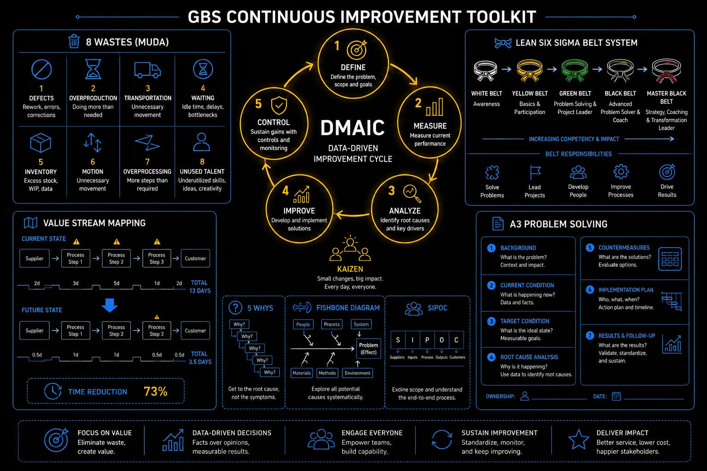

Continuous Improvement The discipline that separates GBS centers that stay efficient from those that drift.
Continuous improvement is a working culture — and a career skill. Every analyst who spots a repeating error, every team lead who maps a wasteful handoff, every manager who asks "why does this step exist?" is practicing CI — with or without a Six Sigma belt.
Sound familiar?
 AYou fix the same error every week. It always comes back.T4 →
AYou fix the same error every week. It always comes back.T4 →
 RYour process feels slow, but you can't point at where.T2 →
RYour process feels slow, but you can't point at where.T2 →
 KYou told your team lead the process is broken. Nothing happened.T3 →
KYou told your team lead the process is broken. Nothing happened.T3 →
 KEveryone says "do Six Sigma." You don't know if a belt is worth the effort.T5 →
KEveryone says "do Six Sigma." You don't know if a belt is worth the effort.T5 →
 PYou improved something real. Leadership never heard about it.T6 →
PYou improved something real. Leadership never heard about it.T6 →
 RYou have an improvement idea and no clue how to pitch it.T1 →
RYou have an improvement idea and no clue how to pitch it.T1 →
Lean vs Six Sigma — what each one does
Lean removes slow. Six Sigma removes wrong. Ask which one your problem is, and you have chosen your tool. Skip to THE FIX for the one-question test.
Everyone says "lean it out."
Nobody explains what that means.
RA CI kickoff meeting. Ravi's team lead opens with a plan.
"We should lean out the invoice process this quarter."
A visiting Black Belt pushes back.
"Where is your baseline data? What is the defect rate?"
Ravi has an idea about the approval step.
He has had it for weeks.
Two experts. Two vocabularies. Ravi understands neither well enough to speak.
He feels invisible in a meeting about his own process.
The meeting ends. The idea stays in his notebook.
You stay quiet in these meetings because you lack the vocabulary, and never because you lack ideas. The idea dies anyway.
Both experts were right. They were solving two different problems — and each method has a name.
Lean — kills SLOW
- Target: waste, waiting, handoffs
- Question: which steps add no value?
- Tools: VSM, 5S, Kaizen, Kanban
- GBS case: cut AP cycle time
Six Sigma — kills WRONG
- Target: errors, variation, defects
- Question: why do outputs differ?
- Tools: DMAIC, fishbone, control charts
- GBS case: cut invoice error rate
The one-question test before any pitch: "Is my problem slow, or wrong?"
Slow → speak Lean. Wrong → speak Six Sigma. Both → Lean Six Sigma, the standard GBS toolkit.
At the next huddle, Ravi tries it. "Our problem is flow — of six days cycle time, five are waiting." The Black Belt turns around. Now they are talking.
+The full comparison — when each method wins, and why GBS combines them
- A process can be fast and wrong — Lean speeds it up, Six Sigma makes it accurate. You need both.
- Lean is best when the problem is flow: too many steps, too many handoffs, unnecessary waiting time
- Six Sigma is best when the problem is quality: recurring errors, variable outputs, defects that keep reappearing
- Lean Six Sigma combines both: reduce waste AND reduce variation. This is the standard CI toolkit in mature GBS organizations
- You do not need a belt certification to use these ideas — you need to understand what problem each tool is designed to solve
Value stream mapping — see the waste before you fix it
Take one process you touch daily. Complete one sentence in writing: "This process is slow because ___" or "wrong because ___." You just chose your tool.
Chose "slow" but can't point at where the time goes? The 8 wastes are the flashlight.

GBS continuous improvement toolkit: DMAIC, 8 wastes, belt system, VSM, and root cause analysis
The 8 wastes — DOWNTIMEAcronym for the 8 wastes: Defects, Overproduction, Waiting, Non-Utilized Talent, Transportation, Inventory, Motion, Extra-Processing.
Waste hides inside busy days. The DOWNTIME checklist gives all 8 waste types a name — and named waste becomes visible, fixable, and worth mentioning in your review. The grid is in THE FIX.
Your day is full.
Your output says otherwise.
RTuesday, reconstructed.
Ravi opens five systems to verify one transaction.
He waits until 2 PM for a single approval.
He retypes data from a PDF into the ERP. Field by field.
6:30 PM. On the bus home, he asks himself one question.
"What did I actually produce today?"
He cannot answer. He worked nine hours and feels drained — and somehow behind.
Busy feels like performing. Your review will measure output, and much of your day is being consumed by the process itself — invisibly, because nobody taught you the names.
Lean gives every type of waste a name — eight of them, remembered as DOWNTIME. Four of them ate Ravi's Tuesday (highlighted).
Named waste stops being "just how it is." It becomes something you can point at.
Ravi walks his own day with the checklist and brings three findings to his team lead — by name, with examples. For the first time, he sounds like someone who studies the process, and someone worth pulling into improvement work.
+All 8 wastes in depth — full GBS examples
Defects
Errors that require rework, correction, or re-processing. The cost includes both fixing the error and the time spent detecting it.
Overproduction
Producing more than is needed, faster than needed. In services: generating reports nobody reads, processing batches before the downstream team is ready.
Waiting
Time spent idle between steps — waiting for approval, missing data, system access, or the previous step to complete. Often the single largest waste in GBS.
Non-Utilized Talent
Skills, knowledge, and ideas that go unused because people are not empowered to contribute. The eighth waste — added to the original Toyota 7 specifically for service environments.
Transportation
Moving information, documents, or work items unnecessarily between people, systems, or locations without adding value.
Inventory
Excess items — documents, tasks, tickets, open items — building up between steps. In GBS, this is your backlog. Work piling up that has not been processed.
Motion
Unnecessary movement by people within a process — clicking through multiple screens, switching between systems, navigating complex interfaces to find one piece of data.
Extra-Processing
Doing more work than the customer requires — triple-checking data that only needs one check, producing output in formats nobody uses, over-engineering simple tasks.
The 8 wastes — DOWNTIME in GBS operations
Track one workday in 30-minute blocks. Label each block with a DOWNTIME letter where one fits. Count the W's. That number is your conversation starter.
Found the waste, told your team lead, and nothing moved? Complaints need structure.
The DMAICDefine, Measure, Analyze, Improve, Control — the five-phase Six Sigma project framework used for structured improvement initiatives in GBS and other service environments. framework — how structured improvement projects work
A complaint hands your manager a problem. A Define + Measure one-pager hands them a decision. DMAIC is the structure — and you can use its first two phases without a belt or a mandate. See THE FIX.
You reported the broken process.
Three times. Nothing moved.
KTeam meeting, March. Klaudia raises it.
"We keep getting duplicate vendor requests. It creates rework."
"Good point. We'll look into it."
April. Same duplicates. She raises it again.
May. She stops raising it.
A colleague shrugs at her.
"Why bother? Nothing changes here."
The worst part: Klaudia is starting to agree. She feels stuck — right when she wanted to prove she is ready for more.
Raising a problem in a meeting feels like initiative. To a busy manager, it lands as one more open loop with no size, no owner, and no next step — so it loses to everything that has all three.
DMAIC is the backbone of every formal improvement project — five phases from "we have a problem" to "it stays solved." The career unlock sits at the front: the first two phases need no belt, no mandate, no permission.
Klaudia's complaint, run through Define and Measure, becomes one page:
Same problem. Different object. Her team lead forwards the one-pager to the CI lead the same day — and Klaudia is invited to the scoping call.
+All five phases in depth — tools and outputs per phase
Define
What is the problem? Who is affected? What does success look like?
Output: Clear problem statement + measurable goal
Measure
Quantify the current state. How bad is it? How often does it happen?
Output: Baseline performance data
Analyze
Find the root causes. Why is it happening? What are the real drivers?
Output: Validated root cause list
Improve
Design and test solutions. Pilot the fix. Measure the impact before full rollout.
Output: Tested improvement with evidence
Control
Lock in the gains. Update the SOP. Monitor to ensure the problem does not return.
Output: Sustained improvement — not a one-time fix
- Define: "Our AP invoice error rate is 8.2%. Target: below 3% within 90 days."
- Measure: Pull last 3 months of invoice data. Categorize error types. Confirm the 8.2% baseline is accurate and reproducible.
- Analyze: 74% of errors come from manual data entry of paper invoices from 3 vendors. Root cause: no e-invoicing setup with those vendors.
- Improve: Onboard the 3 vendors onto e-invoicing portal. Pilot with vendor A for 2 weeks — error rate drops to 0.4% for that subset.
- Control: Roll out to all three vendors. Update the DTP. Add a monthly KPI review to detect any future drift. Close the project.
A3 Problem Solving: a one-page structured problem analysis — named for the A3 paper size.
- Contains: background, current situation, root cause analysis, proposed solution, implementation plan, and expected outcome
- Lightweight DMAIC for smaller problems
- Used heavily in Lean environments
SIPOC: Suppliers → Inputs → Process → Outputs → Customers. A high-level process map used in the Define phase to establish scope.
- Five columns on a page
- Answers: what triggers the process, what feeds it, what steps it contains, what it produces, and who receives the output
DMAIC — define, measure, analyze, improve, control
Take the problem you have complained about most. Write its Define line — what happens, to whom, how often — and attach one week of real counts. Then hand it over, on one page.
Structure gets you into the project. Finding the real cause is how you win it.
Root cause analysis and CAPA — finding the real cause, and making the fix stick
A repeated error means an unfound root cause. Five whys finds it. CAPA makes the fix permanent. Skip to THE FIX if you just want the method.
You fix it. It comes back.
You fix it again.
AEvery Thursday, the same invoices fail validation.
Every Thursday, Amara fixes them by hand.
40 minutes. Gone.
"You're so fast with these," her team lead says. "Great job."
Amara smiles. Inside, she is furious.
She has fixed this exact error 31 times.
Nobody has ever asked the only question that matters:
"Why Thursday?"
Amara is being praised for treating a symptom. The praise feels good. The problem stays — and so does her Thursday.
The real cause sits one system upstream — a customer master field set wrong eight months ago, by a team Amara has never spoken to.
Here is Amara's Thursday, run through five whys:
One master data fix. One new validation rule. One owner.
Amara's Thursday is hers again — and the same fix just prevented the error for every customer onboarded next year.
+The full method — 5 Whys rules, fishbone diagram, and the CAPA loop
Root cause analysis (RCA) is a structured way to find the real reason a problem happened, instead of stopping at the first visible cause. CAPA — corrective and preventive action — is what you do with that finding: remove the cause so the problem cannot come back, and act on the same weakness elsewhere before it bites. In GBS the two work as a pair. RCA without CAPA gives you a diagnosis and no treatment. CAPA without RCA treats a symptom, and the problem returns.
Most GBS problems that reach your manager are repeat problems — the same SLA breach, the same error type, the same escalation. Leadership and auditors do not want to hear that you fixed it again. They want to hear that you found why it happened and closed it for good. RCA and CAPA turn a recurring fire into a closed issue, with a record that stands up in an audit.
The 5 Whys
Start with the problem exactly as it was reported, and ask why it happened. Answer with evidence, not a guess. Then ask why of that answer, and keep going — usually four to six steps — until you reach a cause you can actually act on. Toyota popularized five as a rule of thumb.
The example below walks a double payment down to its real cause. Notice where it ends — at the process gap that let a duplicate through, rather than at the person who keyed the invoice. Stop too early, at "the analyst made a mistake," and you fix nothing. One more rule: a problem can have more than one chain of causes, so follow each one.
Five whys — from symptom down to an actionable root cause
Fishbone (Ishikawa) diagram
When a problem could have several contributing causes, a fishbone diagram lays them out so you do not lock onto the first idea. Put the problem at the head. The bones are categories of cause. Manufacturing uses six Ms; for GBS and service work, useful categories are people, process, policy, systems, data and inputs, and environment. Brainstorm possible causes under each bone, then test which ones the evidence actually supports. It is named after Kaoru Ishikawa. A quick Pareto view — the idea that roughly 80% of failures come from 20% of causes — then helps you spend effort where it pays.
Fishbone — six cause categories feeding one problem
CAPA — corrective and preventive action
Once you know the cause, CAPA is the disciplined response. It has a few moving parts that people often blur together.
- Containment — the immediate action that stops the harm now: hold the payment run, flag the affected accounts. It buys time, and it is not the fix.
- Corrective action — remove the root cause so this exact problem cannot recur: add a cross-channel duplicate-invoice check.
- Preventive action — apply the same fix to related work before it fails: put the duplicate check on every intake queue that shares the weakness.
- Verify effectiveness — the step most teams skip. Come back after a set period and confirm the problem actually stopped. If it did not, the cause was wrong, so reopen.
- Close — document and close only once effectiveness is proven.
ISO 9001:2015 folded the older idea of "preventive action" into risk-based thinking across the whole management system. The principle holds: act on causes and risks, not only on symptoms.
From detection to a verified, closed fix — preventive action included
How this connects to DMAIC
If you have read the DMAIC topic above, RCA and CAPA are the tools you reach for inside it. RCA powers the Analyze phase. Corrective and preventive action sit in Improve, and verifying effectiveness belongs in Control. The structure of DMAIC keeps you honest about doing both.
- Jumping to a solution before the cause is proven.
- Stopping at human error — naming a person instead of the process gap that let the error through.
- Skipping the effectiveness check — closing an action on the day it is implemented, before there is any proof it worked.
- A CAPA log that opens items and never closes them, which signals control on paper only.
Sources: ASQ (Ishikawa diagram, CAPA) · Taiichi Ohno / Toyota Production System (5 Whys) · ISO 9001:2015 (corrective action, risk-based thinking).
Pick your most repeated fix. Ask "why" five times — in writing. Bring the fifth answer, not the first, to your team lead.
Found the cause, but the fix keeps sliding after two quiet weeks? That is a control problem — DMAIC's Control phase exists for exactly this.
The Six Sigma belt system — what it actually means for your career
Yellow and Green Belt training is often employer-funded and inside working hours — the real question is whether a project comes attached. The delivered project is the career story; the belt formalizes it. Ladder in THE FIX.
Is a Six Sigma belt
worth the effort?
KSunday evening, LinkedIn.
A former teammate posts a Green Belt certificate.
84 reactions. "Congratulations!" everywhere.
Klaudia checks the intranet. Her company runs a Green Belt program — employer-funded, during working hours. Applications close Friday.
Half her feed says a belt changed their career.
A colleague calls them "certificate wallpaper."
She feels torn: real career move, or twelve training days for a PDF?
A belt with no project behind it is a certificate. A delivered project with no belt is still a career story. Many people collect the certificate and skip the story.
Belts are optional in GBS — and they still signal something real: this person can run a structured improvement project, and can do more than describe one.
The pairing that pays: training plus a real project. Companies usually try to staff belts on improvement projects during and after certification — say yes to those. The certificate formalizes what the project proves.
I have watched many Green Belts end up doing regular project management. The analytical tools that separate Six Sigma from standard project work often get reduced in training, or never applied afterwards. I still rate the programs. The toolkit and the discipline lift how people run everything else they touch. Go in for the tools. Treat the certificate as the bonus.
Klaudia applies — and asks one question in the intake call: which project would she run. The answer makes the training real.
+Each belt in depth — training scope and which GBS roles they serve
Yellow Belt — awareness level
Understands the DMAIC framework and the 8 wastes.
- Can participate in improvement projects as a team member
- 1–2 days training
- Suitable for all GBS analysts — especially those early in their career
Green Belt — project lead level
Can lead a DMAIC project independently.
- Practical experience with data collection, root cause analysis, and solution implementation
- 2–4 weeks training + a real project
- Highly relevant for GBS team leads, process specialists, and those targeting operational excellence or project management roles
Black Belt — full-time improvement specialist
Leads multiple complex projects simultaneously.
- Deep statistical analysis, mentors Green Belts, drives CI culture
- Typically a dedicated CI role rather than a practitioner add-on
- Most GBS organizations have 1–3 Black Belts per major center
Master Black Belt — strategic level
Trains and certifies other belts. Designs the CI program.
- Rarely seen below regional or global GBS leadership level
- Certification route typically takes 2+ years of active project work
Belt system — from Yellow Belt awareness to Black Belt leadership
Before enrolling in any belt program, ask your manager one question: "Which improvement project would I run with it?" The answer tells you whether it is a career move or a calendar entry.
Project delivered? Now make the value count where it matters.
How to actually build this capability
Reading about CI builds awareness. Real capability comes from doing it — ideally inside a structured program. Here is the honest order of priority.
- Corporate programs first, if they exist. Structured, certified, and recognized internally — they are worth the most. Seats are usually limited and gated by manager or team-lead approval, so make your interest known early. Tell them you want it.
- Volunteer on real projects — no formality needed. You do not need a belt to join an improvement initiative. Put your hand up. A live problem teaches more than any course.
- Self-study, free, any time. YouTube, free Yellow Belt courses, and reputable sites cost nothing. Strong for fundamentals and awareness; weaker on certification weight.
- GoLeanSixSigma — free Yellow Belt training and certification
- Coursera — Six Sigma Yellow Belt specialization (Kennesaw State); audit for free
- Alison — free Lean Six Sigma Yellow Belt course
- ASQ — the recognized certification body (paid, globally respected)
- Kaizen Institute — Kaizen methodology, articles, and training
- Pareto (80/20) — most of the problem comes from a few drivers. Find and fix those first.
- 5 Whys — keep asking why until you move past the symptom and reach the real cause.
- Focus on the measures — improve what you can measure, and let the data point the way rather than opinion. (Example: a credit-limit-review backlog — measure the drivers behind it, then fix the few that matter most.)
- A Green Belt is already valuable — it says you can run a structured project, not just describe one. A Black Belt is rarely necessary for yourself unless you want to go full-time into CI.
- But the real skill is not the tools — it is the habit. If you are constantly thinking critically, spotting waste and bottlenecks, and challenging why a task, process, or activity is done at all, the rest follows. It becomes natural. It is a muscle you train over time.
Hard vs soft savings — how GBS proves its impact
Finance counts hard savings — money traceable in the P&L. Most improvements create soft savings — real value that needs translation. Learn to state where freed capacity went, and your work becomes visible upward. Split in THE FIX.
You saved the team 300 hours.
Finance counted zero.
PQuarterly ops review. Peter presents his team's win: an automated reconciliation step.
300 hours a year, freed.
Big number on the slide. He is proud of this one.
The finance controller looks up.
"Which cost line goes down?"
Silence.
The big number suddenly feels small. Peter leaves the room deflated — the work was real, and the room moved on.
Effort impresses your team. The P&L impresses leadership. Present hours saved without saying where the value landed, and the room hears "nice to have."
Savings come in two currencies, and Finance only banks one of them.
Hard — lives in the P&L
- Headcount reduction — fewer FTEs, same volume
- Vendor cost down — renegotiated contracts
- Penalties eliminated — late-payment fees gone
- Rework cost removed — traceable to a line
Soft — real, not in the ledger
- Capacity created — absorb growth without hiring
- Risk avoided — lower audit exposure
- Time upgraded — analysis instead of rekeying
- Errors prevented — costs that never appear
The career skill is translation. Two rules:
Peter reworks one line for the next review: "The freed capacity absorbed this year's 12% volume growth — zero additional headcount requested." The controller writes it down.
+The full picture — validating savings with Finance, innovation vs CI, and the A3 one-pager
Real money, real accountability
- Headcount reduction — fewer FTEs processing the same volume
- Vendor cost reduction — renegotiated supplier contracts enabled by better data
- Late payment penalty elimination — saved by fixing cycle times
- Error correction cost removal — less rework, less manual intervention
- Finance can directly trace these to the income statement
- The gold standard for CI projects — but not always achievable
Value exists, but not in the ledger
- Capacity creation — team can absorb more volume without adding headcount
- Risk avoidance — controls improvement reduces audit exposure
- Time freed for higher-value work — processors doing analysis instead of rekeying
- Error prevention — problems not created don't show up as costs
- Finance may not accept these as savings — but they are real business value
- Important to document and communicate, even if not in the P&L
- Soft savings are not imaginary — they are just harder to monetize. When a process improvement frees 2 FTEs' worth of capacity, that capacity either absorbs growth without new hires (real value) or enables those FTEs to work on higher-value activities (real value). The problem is that neither shows up automatically in the P&L. Document capacity reallocation explicitly — track where the freed time went.
- Hard savings require a signed-off headcount change to be credible. "We could reduce by 2 FTEs" is not a hard saving until someone's contract ends or a role is eliminated. Finance has heard too many CI project claims that never materialized. Build the change management required to actually capture the saving — not just claim it.
- Innovation vs CI — know the difference. CI is about making existing processes run better: faster, more accurately, with less waste. Innovation is about challenging whether the process should exist at all, or redesigning it from scratch. Both create value. Confusing them leads to CI teams running hackathons and innovation teams doing spreadsheet optimization.
A3 thinking — one-page problem solving
Take your last improvement. Write two lines: one hard-savings claim only if provable, and one capacity line stating exactly where the freed time went. Keep both ready for your next review.
Translating value upward is how improvement work becomes promotion currency — Pillar 5 picks this thread up from here.
- Most GBS CI programs die not because the methodology failed — but because someone tried to boil the ocean. Start with a process you touch every day, fix one visible pain point, and document the before and after. That single win buys you credibility for the next ten.
- Green Belt certification looks great on a resume, but the people who actually get promoted are the ones who delivered measurable savings — not the ones who passed the exam. Get the belt, but use it on real problems.
- The hardest part of CI is not finding waste — it is getting people to admit it exists. Nobody wants to say their process has a problem. Frame it as "how do we make this easier" instead of "what is wrong here," and resistance drops overnight.
Key terms in this cluster
Full glossary at the GBS Insider Club Field Guide.
- Learn Lean Sigma — Guide: 8 Wastes of Lean
- GoLeanSixSigma — 8 Wastes: Identify and Eliminate Waste in Your Workflow
- The Social Cat — The Ultimate Lean Six Sigma Guide (2025)
- SixSigma.us — Lean — The 8 Wastes
- LinkedIn (Abdul Gafoor) — The 8 Types of Wastes in Lean Six Sigma
- ✓ Lean vs Six Sigma — what each targets and why GBS uses both
- ✓ DOWNTIME wastes — all 8 with GBS-specific examples
- ✓ DMAIC — five phases with a worked GBS example
- ✓ Belt system — Yellow through Master Black Belt, career relevance
- ✓ Hard vs soft savings — how to prove GBS impact to Finance
- → Operational Controls — quality, four-eyes, audit readiness — Cluster 4
Want the full breakdown on video?
Lean Six Sigma for GBS professionals — covered in depth on the GBS Insider Club YouTube channel.
▶ Subscribe on YouTubeTest Yourself
Scenario check — would you make the right call?
No trivia. Every question is a situation you will actually face. Pick your answer, get the reasoning.
Knowing the frameworks is the entry ticket. Applying them — visibly, at your actual job — is what gets you promoted.
The GBS Insider Club Career Paths turn this theory into a guided 90-day program for your role: self-assessment, practical exercises, templates, and Julian's unfiltered practitioner playbook.
Explore the Career Paths → Back to Operational Excellence